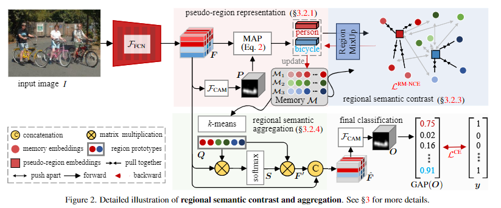
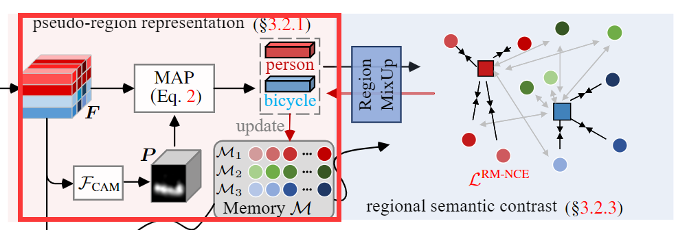
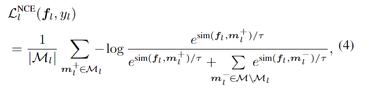
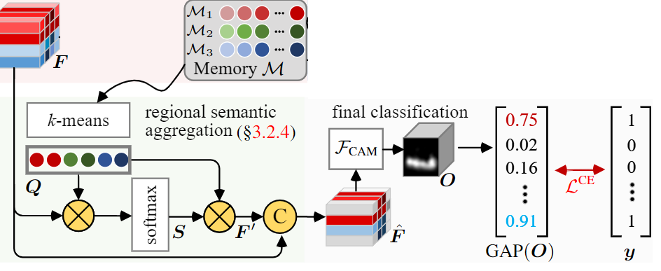

文章标题：Regional Semantic Contrast and Aggregation for Weakly Supervised Semantic Segmentation
文章链接：https://arxiv.org/abs/2203.09653
发表时间：2022-03-22
从类别标签中学习语义分割的挑战在于很难从稀疏的类别标签中推断出目标密集的区域掩码。目前这方面的研究都只尝试在一个样本上或者一个样本组中进行，这严重限制了语义分割获取完整的注意力图。
Learning semantic segmentation from weakly-labeled (e.g., image tags only) data is challenging since it is hard to infer dense object regions from sparse semantic tags. Despite being broadly studied, most current efforts directly learn from limited semantic annotations carried by individual image or image pairs, and struggle to obtain integral localization maps.
作者指出，可以通过对整个数据集样本的学习，提取出有用的语义信息，促进模型的推理。于是作者提出了区域语义对比和聚合(RCA)模型。为什么是区域呢？作者指出与CIAN，MCIS中的像素级关系建模不同，RCA更喜欢区域感知的表示，这种表示对噪声更有效、更鲁棒。
RCA具有区域存储库，存储训练数据中出现的大量不同的对象模型表示，以便构建出数据集级别的语义结构。
语义对比: 通过对比大量的已知分类对象区域的聚类来驱动网络学习，形成更加全面的对象模型理解。
语义聚合：通过在存储库中聚合相关的上下文，捕捉到更多信息的数据集级语义，通过收集不同的语义上下文可以改善每幅图像的特征表示。
对于每个批次样本，作者使用判决门限将粗糙的CAM划分为分类的伪区域，该伪区域是在其单图像标签的监督下学习的。对于每个伪区域，RCA建立了它与所有其他图像中的区域的关系，以促进数据集级别的语义上下文学习。对于可行计算，我们将RCA与一个不断更新的存储库相关联，该存储库在训练过程中收集并保留数据集中有意义的区域语义，适用于网络学习和推理阶段。在训练过程中，RCA从两个新颖的角度探索了每个小批量区域和记忆库的语义关系
语义对比：对于每个伪区域，语义对比迫使网络将其嵌入与同一类别的记忆嵌入位置拉得更近，而将不同类别的记忆嵌入位置推开。这种对比性质很好地补充了分类目标(对于每一幅图像)，以提高对象表示学习。
使该模型能够收集数据集级的上下文知识，以产生更多的有意义的物体表征。它通过一个非参数化的注意力模块实现的，该模块独立地总结每个图像的记忆表征。与传统的图像内语境学习方案A2-nets, 袁提出的Object contextual representations相比，作者的语义聚合侧重于图像间语境的挖掘，因此能够捕捉到更多信息的数据集级语义。

首先通过CAM获取到类激活图P，再做掩码平均池化，得到每个类别的表达。这里每个类别的表达可以通过语义对比进行训练。

是一些列卷积操作，用于获取类激活图
AMP的公式如下,其中表示图中类激活图的二值化,c为对象分类数
伪区域表示库M中一共个字典，对应每一个分类，作者用 表示。每一个中包含着多个此类的实例。下面是其聚类所使用到的损失，本质上是一个softmax交叉熵。

首先对于记忆库中的每一个m_l 会被使用k-means算法进行聚类，得到K个聚类原型 。 对于每一个分类，使用K个原型可以表示类内之间的差距。

接下来使用一次矩阵乘法获取每个特征像素和原型之间的相似程度。
接着再一次相乘拼接，获取新的特征像素表示。
最后通过网络和全局平均池化，与分类标签进行损失函数计算。
使用k-means将每个类别聚类出K个原型，他们之间可能差别较小，如何保证他们之间存在着足够的差异来保证可以表示类间的差距。